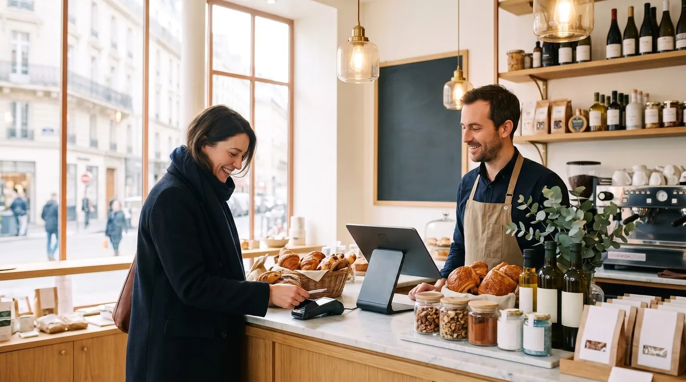

Meilleurs logiciels de caisse gratuits en 2026
Vous cherchez une caisse enregistreuse sans abonnement pour votre commerce, votre bar ou votre restaurant ? Bonne nouvelle : il existe aujourd'hui d'excellents logiciels gratuits. Mauvaise nouvelle : tous ne se valent pas, et certains « gratuits » cachent des frais. Voici notre classement, basé sur le rapport fonctionnalités / coût réel.

Comment nous avons comparé
Un logiciel de caisse « gratuit » peut vite coûter cher : commissions sur les paiements, modules indispensables payants, matériel imposé… Nous avons donc évalué chaque solution sur 5 critères concrets :
À lire dans la foulée : calculateur de frais d'encaissement, choisir sa caisse enregistreuse, et attirer plus de clients. Et si vous tenez une boulangerie, le comparatif dédié : caisse boulangerie, SumUp, Zettle ou L'Addition.
- Coût réel : que paie-t-on vraiment une fois en activité ?
- Fonctionnalités de base incluses : ventes, tickets, rapports, employés.
- Mode hors ligne : la caisse fonctionne-t-elle si Internet tombe ?
- Adapté à la restauration : plan de salle, gestion des tables, envoi en cuisine.
- Simplicité de prise en main : combien de temps pour démarrer.
Le classement 2026
digabloPos
digabloPos coche presque toutes les cases que les autres laissent vides. Le plan de base est gratuit à vie (sans date limite, sans carte bancaire), et surtout il inclut des choses que les concurrents font payer : le mode hors ligne avec synchronisation automatique et le plan de salle interactif pour la restauration. On l'installe en 5 minutes et on ajoute des modules (stocks, etc.) seulement si on en a besoin.
👍 Points forts
- Gratuit à vie, sans engagement
- Fonctionne sans Internet
- Pensé pour la restauration (tables, cuisine)
- Multi-devises, en module payant (environ 10 $/mois)
- Modules à la carte, on ne paie que l'utile
- Gestion des ardoises / crédit client
- Prête pour la facturation électronique
- Certifiée NF525
👎 À noter
- Marque plus récente que les géants américains
- Certains modules avancés sont payants
Loyverse
Une référence très répandue, simple et gratuite pour la caisse de base. Le bémol : plusieurs fonctions courantes (gestion fine des employés, inventaire avancé) passent par des modules payants d'environ 25 $/mois par magasin chacun, et la solution reste plus orientée commerce de détail que restauration complète.
👍 Points forts
- Très populaire, communauté large
- Interface claire
- Programme de fidélité intégré
👎 Limites
- Add-ons mensuels qui s'accumulent
- Plan de salle restauration limité
Square
L'application de caisse est gratuite, mais le modèle Square repose sur une commission d'environ 2,6 % + 0,15 $ sur chaque paiement par carte en personne (plan gratuit aux États-Unis). Des plans payants à 49 $ et 149 $/mois abaissent ce taux. Pour un commerce à fort volume, ces frais finissent par dépasser largement le prix d'un logiciel payant classique. Écosystème matériel soigné, en revanche.
👍 Points forts
- App gratuite, écosystème complet
- Matériel design
👎 Limites
- Commission sur chaque encaissement carte
- Coût qui grimpe avec le chiffre d'affaires
SumUp / Zettle (PayPal)
Idéales pour les très petits vendeurs et le terminal de paiement mobile, ces solutions misent surtout sur le lecteur de carte et la commission (de l'ordre de 1,7 % à 2,6 % par transaction selon le pays) plutôt que sur un logiciel de caisse riche ; les fonctions de caisse avancées sont souvent en option payante. Parfait pour un food truck occasionnel, plus juste pour un restaurant ou une boutique structurée.
👍 Points forts
- Démarrage ultra-simple
- Lecteur de carte abordable
👎 Limites
- Logiciel de caisse basique
- Commission sur chaque vente
Vous voulez tester sans rien dépenser ?
Le plan de base de notre n°1 est gratuit à vie, prêt en 5 minutes, sans carte bancaire.
Essayer digabloPos gratuitementTableau comparatif
| Critère | digabloPos | Loyverse | Square | SumUp / Zettle |
|---|---|---|---|---|
| Plan gratuit à vie | Oui | Oui* | App oui | App oui |
| Mode hors ligne | Oui | Partiel | Partiel | Limité |
| Plan de salle / tables | Oui | Limité | Module | Non |
| Multi-devises | Oui, module payant | Partiel | Partiel | Partiel |
| Commission sur paiements | Non imposée | Non imposée | Oui | Oui |
| Prise en main | ~5 min | Rapide | Rapide | Très rapide |
*Selon les modules activés. Tarifs vérifiés en juin 2026 (sources : grilles tarifaires officielles et comparateurs spécialisés). Les tarifs et fonctionnalités des éditeurs évoluent et varient selon le pays : vérifiez toujours sur leurs sites officiels avant de choisir.
Les 3 pièges du « 100 % gratuit »
Avant de signer, méfiez-vous de ces coûts cachés fréquents :
- La commission sur les paiements. Un logiciel gratuit qui prend 1,5 à 2,9 % sur chaque vente par carte peut vous coûter des centaines d'euros par mois.
- Les modules « indispensables » payants. Gestion des stocks, des employés, des rapports avancés : vérifiez ce qui est inclus dans le plan gratuit.
- Le matériel imposé. Certaines solutions ne fonctionnent qu'avec leur propre terminal, à acheter.
Le bon réflexe : calculez le coût sur 12 mois, commission comprise, pas seulement le prix affiché « 0 € ».
Questions fréquentes
Un logiciel de caisse gratuit est-il vraiment légal en France ?
Oui, à condition qu'il respecte la réglementation anti-fraude à la TVA (inaltérabilité, sécurisation, conservation et archivage des données). Vérifiez que l'éditeur le mentionne. Les meilleures solutions intègrent cette conformité.
Puis-je utiliser une caisse gratuite sur tablette ou téléphone ?
Oui. La plupart des caisses cloud modernes fonctionnent sur tablette Android/iPad et même smartphone, sans matériel propriétaire obligatoire.
Que se passe-t-il si Internet tombe en plein service ?
Avec une caisse disposant d'un vrai mode hors ligne, vous continuez à encaisser ; les données se synchronisent dès le retour du réseau. C'est un critère essentiel en restauration.
Le gratuit suffit-il vraiment pour un commerce ?
Pour démarrer, oui, très souvent. On ajoute ensuite des modules (stocks, fidélité…) uniquement quand le besoin apparaît. C'est la logique « à la carte » la plus économique.
Prêt à encaisser dès aujourd'hui ?
Installez votre caisse gratuite en 5 minutes, sans engagement ni carte bancaire.
Créer ma caisse gratuite, 5 minSources officielles
Les tarifs et les fonctions bougent souvent. Voici la documentation des éditeurs cités, pour vérifier par vous-même.
- Centre d'aide SumUp : ce que l'éditeur documente lui-même sur ses fonctions et ses tarifs.
- Site officiel Zettle : ce que l'éditeur documente lui-même sur ses fonctions et ses tarifs.